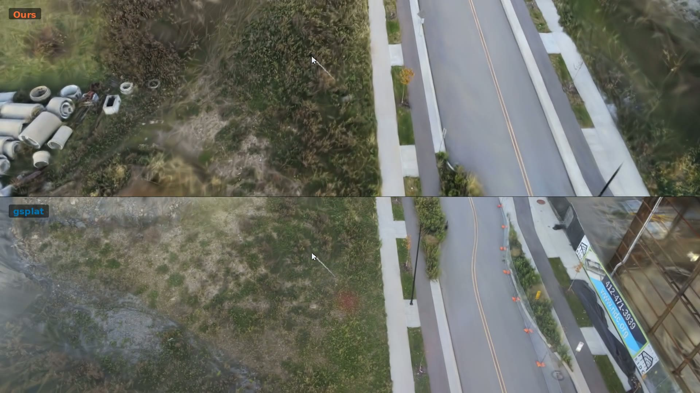

Warp-saturating tile-key emission
Adaptive dispatch routes single-tile, 2-31 tile, and large multi-tile Gaussians into specialized paths so every warp lane emits useful tile tasks.

3D Gaussian Splatting Rasterization
Workload-regime-aware CUDA rasterization for robust 3DGS rendering across extreme primitive counts, high resolutions, and interactive 60 Hz latency constraints.
Rasterization dictates the interactive budget of 3D Gaussian Splatting (3DGS). However, the comparative speed of modern CUDA rasterizers is typically evaluated on a narrow canonical benchmark, masking severe regime-dependent performance reversals.
PolySplat introduces a warp-saturating tile-key emitter with adaptive three-way dispatch, asynchronous shared-memory staging in the render kernel, and a persistent kernel architecture with centralized atomic dispatch to bound tail latency. On an extended 76-target benchmark, PolySplat achieves dataset-balanced geometric-mean speedups of 1.26x to 6.48x over state-of-the-art rasterizers at lossless visual quality. Under sustained 60 Hz interaction at extreme resolutions, PolySplat meets 1-vsync display deadlines where existing renderers suffer queue divergence and input-to-photon lag.
Mill19 Rubble, 3.19M Gaussians, 9216 x 6912 rendering, strict-order 1-vsync queue protocol.
Adaptive dispatch routes single-tile, 2-31 tile, and large multi-tile Gaussians into specialized paths so every warp lane emits useful tile tasks.
Double-buffered feature staging overlaps irregular global-memory gathers with pixel shading, removing exposed latency from the render critical path.
Resident blocks pull tiles from an atomic global queue, reducing terminal imbalance in heavy-tailed spatial workloads.
Dataset-balanced geometric means show PolySplat accelerating the forward pass over FlashGS, gsplat, Flash3DGS, and the INRIA 3DGS reference while preserving visual quality.
| Dataset | Targets | Cams | PolySplat ms | FlashGS ms | gsplat ms | Speedup vs gsplat |
|---|---|---|---|---|---|---|
| dl3dv | 2 | 40 | 1.86 | 2.24 | 4.20 | 2.27x |
| eyeful | 2 | 40 | 8.04 | 8.66 | 23.66 | 2.95x |
| flashgs_data | 13 | 260 | 1.79 | 2.21 | 4.18 | 2.26x |
| h3dgs | 4 | 80 | 7.26 | 12.18 | 9.74 | 1.37x |
| llff | 8 | 160 | 1.80 | 2.08 | 5.04 | 2.80x |
| mill19 | 2 | 40 | 2.89 | 3.12 | 10.71 | 3.70x |
| nerfstudio | 12 | 240 | 1.08 | 1.49 | 2.29 | 2.14x |
| seathru-nerf | 4 | 78 | 0.76 | 1.08 | 1.54 | 2.03x |
| tanksandtemples | 21 | 420 | 1.03 | 1.62 | 1.69 | 1.66x |
| urbanscene3d | 1 | 20 | 5.31 | 5.70 | 14.00 | 2.64x |
| worldengine_navtest | 3 | 60 | 0.63 | 0.70 | 1.52 | 2.41x |
| zipnerf | 4 | 80 | 0.72 | 0.95 | 1.40 | 1.96x |
On a 360-frame, 6.0 s Mill19 Rubble trajectory at 9216 x 6912, PolySplat keeps every render below the 16.67 ms 1-vsync budget. gsplat sits above budget on nearly every frame, causing queue divergence and seconds of input-to-photon lag.
The site includes converted web figures and the demo MP4. It can be served as plain static files, with the paper link reserved for the public arXiv version.